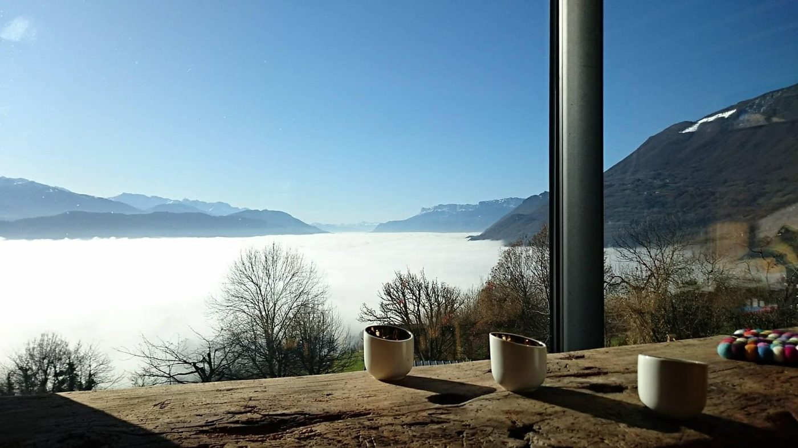
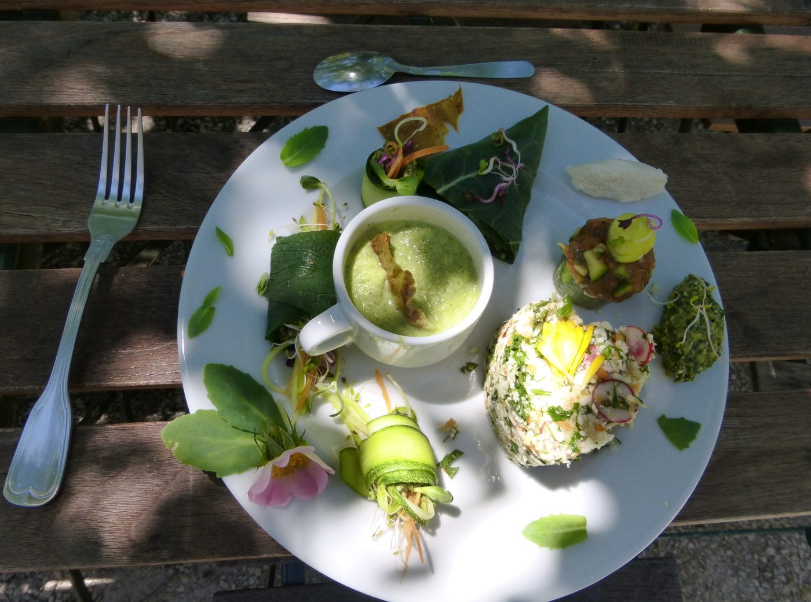
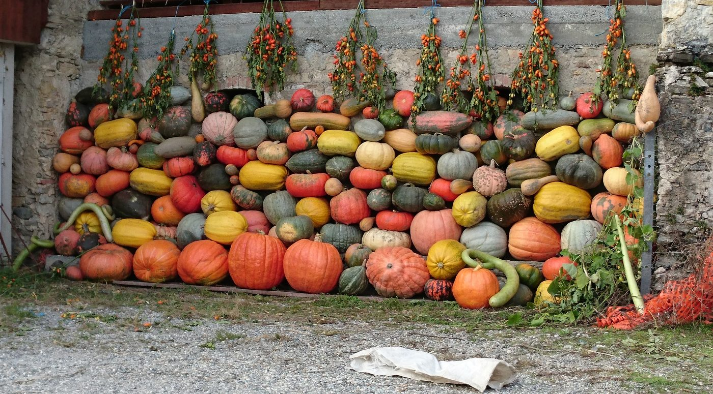
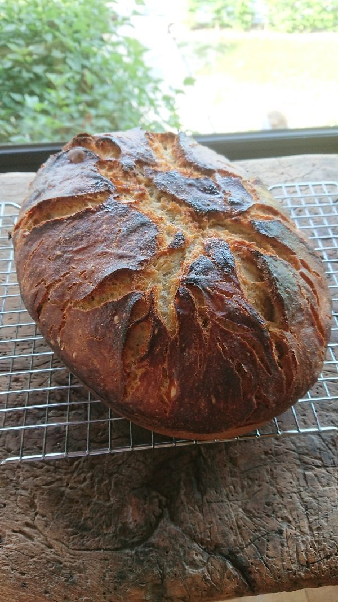

Le petit déjeuner
10 € par personne
- Café, thé, chicorée, chocolat, lait
- Pains, brioches et gâteaux faits maison
- Confitures, yaourts, miel des producteurs voisins
- Jus de pommes du coin
Servi entre 8 h et 9 h 30, horaire adaptable sur demande

Accueil · La table
Des produits frais, locaux et faits maison, servis dans une grande salle ouverte sur les massifs.
10 € par personne
Servi entre 8 h et 9 h 30, horaire adaptable sur demande
25 € par personne
Servi à 19 h 30, sur réservation 48 h à l’avance



La cuisine des 7 Sartôts est conviviale : des spécialités savoyardes parfois revisitées, ou des assiettes d’inspiration végétarienne. Elle est toujours faite de produits frais, de producteurs locaux ou du potager de la maison selon la saison.
Une allergie ou un régime particulier ? Dites-le à la réservation : le menu en tient compte.
Photos de la région : Wikimedia Commons. Abbaye de Tamié et tome des Bauges : Nicolas Vigier from Paris, France (CC BY 2.0).
Indiquez-le dans votre demande : la table d’hôtes se prépare au moins 48 h à l’avance.
Choisissez vos dates sur le planning : vous voyez tout de suite ce qui est libre et le prix de votre séjour, taxe de séjour comprise.
Une question avant de réserver ? Écrivez-nous
Les 7 Sartôts sont une maison d’hôtes pensée pour les adultes : la piscine est réservée aux plus de 18 ans et les hébergements n’ont pas d’équipement pour les enfants.
Tous les jours de juin à fin septembre, de 11 h 15 à 19 h, sauf intempéries ou maintenance. Elle est réservée aux adultes.
Oui, à la table d’hôtes, sur réservation au moins 48 h à l’avance : 25 € par personne, servi à 19 h 30. Le petit déjeuner est à 10 € par personne, entre 8 h et 9 h 30.
En ligne, avec le bouton « Réserver » : vous choisissez vos dates sur le planning, votre hébergement et vos options. Le prix du séjour s’affiche aussitôt. Vous pouvez aussi appeler au 06 51 59 32 98. Pour confirmer, des arrhes de 30 % sont demandées, par chèque ou virement.
Entre 16 h et 19 h. Si vous arrivez plus tard, prévenez-nous. Le départ se fait à 10 h 30 (10 h en été ; 10 h toute l’année au Guesthouse et à Cloudelin).
Non, les animaux ne sont pas admis aux 7 Sartôts.
Les gîtes, les terrasses et la piscine sont non-fumeurs. Un espace est aménagé pour les fumeurs : la télécabine, une vraie cabine de remontée mécanique posée dans le jardin.